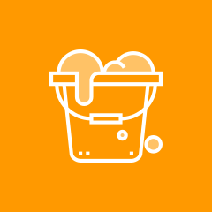
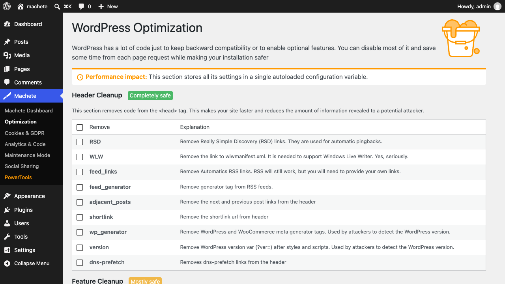

WordPress Optimization
WordPress has a lot of code just to keep backward compatibility or to enable optional features. The WordPress Optimization module helps you disable most of it and save some time on each page request, while making your installation safer.
The options are sorted by risk, from completely safe to handle with care, so you always know what you are touching.

Header cleanup Completely safe
- RSD: removes the Really Simple Discovery links, used for automatic pingbacks.
- WLW: removes the link to
wlwmanifest.xml, only needed by Windows Live Writer. - Feed links: removes the automatic RSS links. Feeds still work.
- Feed generator: removes the generator tag from RSS feeds.
- Adjacent posts: removes the next and previous post links from the header.
- Shortlink: removes the shortlink URL from the header.
- Generator tags: removes the WordPress and WooCommerce generator meta tags, used by attackers to detect the WordPress version.
- Version strings: removes the
?ver=query string from styles and scripts. - DNS prefetch: removes the
dns-prefetchlinks from the header.
Feature cleanup Mostly safe
- Emojis: removes the emoji styles and scripts from the header, RSS, emails and the editor.
- PDF thumbnails: stops WordPress from making a thumbnail of every PDF you upload.
- Limit post revisions: keeps only 5 revisions per post, unless
WP_POST_REVISIONSis already defined. - Slow heartbeat: the editor checks in every 60 seconds instead of every 15.
- Comment reply script: loads
comment-reply.jsonly when it is needed. - Empty trash every week: instead of every 30 days.
- capital_P_dangit: stops WordPress from rewriting “Wordpress” as “WordPress” in every title, content and comment.
- medium_large, 1536x1536 and 2048x2048 thumbnails: each image size can be disabled on its own.
- No comment autolinks: URLs in comments are no longer turned into links, a favorite of spammers.
- Random content redirect: disables the
/random/URLs added in WordPress 7.2, which run a slow random query on every visit. - Login languages: hides the language switcher on the login screen.
- Plugin and theme editor: disables a mostly useless tool that can be very dangerous in the wrong hands.
Optimization tweaks Handle with care
- Core AI support: disables all the WordPress core AI features.
- JSON API: removes the REST API links from the header and requires API consumers to be authenticated.
- XML-RPC: disables the XML-RPC interface.
- jQuery Migrate: removes the compatibility layer for old jQuery code from the frontend.
- oEmbed scripts: removes oEmbed if you don’t embed content from other sites.
- Reduce JPEG quality: thumbnails are compressed to 72% instead of 82%. Originals are not touched.
- Big image scaling: stops WordPress from making a 2560px copy of huge uploads.
- Block editor CSS: removes the block stylesheets from the frontend.
- Global CSS: removes the inline global styles and block-support CSS.